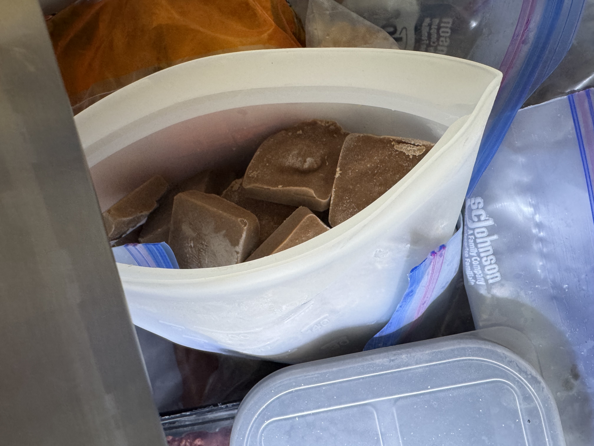

For a baby transitioning to solid foods, every single bite counts. Their little tummies can only hold so much, but their nutritional demands are sky-high—especially for brain and blood development. Chicken liver acts like nature's multivitamin, providing an exceptionally dense array of minerals and vitamins in small, easily absorbed amounts.
Preventing the 6-Month Dip
Heme Iron
Around six months of age, a baby’s natural in-utero iron stores begin to drop. Since breast milk is naturally low in iron, infants rely heavily on complementary foods to bridge this gap. Iron is absolutely critical for producing hemoglobin, tracking oxygen through the body, and supporting neurological development.
Chicken liver is loaded with highly bioavailable heme iron. Unlike the iron found in plant sources (like spinach or lentils), heme iron is incredibly easy for your baby's delicate digestive system to absorb directly, ensuring they hit their cognitive and physical milestones smoothly.
The Brain Builder
Choline
While DHA gets a ton of well-deserved attention, choline is an unsung hero of early brain growth. Choline plays an indispensable role in forming cellular membranes, supporting neurotransmitters, and laying the groundwork for lifelong memory and learning capacities.
Chicken liver stands out as one of the richest whole-food sources of choline on the planet, making it an incredible functional choice during periods of rapid neurological expansion.
Nature's Multivitamin
Zinc & Vital B-Vitamins
Beyond iron and choline, chicken liver offers a full spectrum of foundational micronutrients that support a thriving immune system and healthy growth:
- Zinc: Essential for cellular repair, wound healing, and building a robust immune response.
- Vitamin B12 & Folate: Critical components for DNA synthesis, optimal cell energy, and the healthy creation of red blood cells.
- High-Quality Protein: Provides all essential amino acids necessary for muscle development.
Important Safety Standard
⚠️ The Golden Rule: Only Once Per Week
Because chicken liver is extraordinarily rich, it is highly concentrated in fat-soluble Vitamin A (Retinol). Vitamin A is wonderful for vision and cell turnover, but since it accumulates in the body, babies can get too much of it if served daily.
Parenting Hack
Batch Cooking & Non-Toxic Storage
Since this superfood is purely a once-a-week addition to the plate, cooking a double batch is the smartest move you can make. It saves you immense preparation time and ensures a perfectly proportioned serving is always accessible.

To store your fresh purée safely, portion the extra pâté directly into partitioned silicone freezer cubes. Once they are frozen solid, pop the cubes out and transfer them into high-quality food-grade silicone bags like these classic stand-up bags or these reusable freezer bags.
When preparing homemade baby food, the fewer microplastics coming into contact with warm food, the better! Stashing your weekly cubes in high-quality silicone guarantees their meals stay pristine, non-toxic, and simple to defrost.
Shop Freezer Trays Shop Silicone BagsThe Recipe
Baby's First Savory Chicken Liver Pâté
Yield: Approx. 1 Cup · Cook Time: 25 Minutes · Frequency: Once Weekly
Infants are actually highly receptive to rich, savory, umami flavors if introduced early! Simmering the liver with shallots and blending it with rich grass-fed butter yields a velvety, mild texture that's incredible on baby-led weaning toast strips or mixed into standard purées.
Ingredients
- 6 oz (168 grams) high-quality chicken livers (defrosted)
- 1 small shallot, peeled and chopped
- 1 cup (240 ml) water
- 1 bay leaf (optional)
- 2 tbsp (28 g) unsalted butter, softened (or extra virgin olive oil)
- For serving: Slices of toasted bread, cut into finger-length strips
Preparation Instructions
- In a small pot, combine the chicken livers, chopped shallot, bay leaf, and 1 cup of water. Bring the mixture to a boil over medium-high heat.
- Once boiling, lower the heat to a simmer. Cover and cook until the livers are entirely firm, between 15 and 20 minutes. A knife inserted into the thickest part should reveal no pink or purple left inside. Ensure your kitchen thermometer reads 165°F (74°C).
- Use a slotted spoon to lift the cooked livers and shallots out of the poaching liquid, discarding the bay leaf. Allow them to cool until comfortable to touch.
- Transfer the cooled livers and shallots into a food processor or small blender along with the 2 tablespoons of softened unsalted butter. Blend into a smooth, silky paste, scraping down the sides as you go. (If the paste is too thick, loosen it with a splash of the remaining cooking liquid, breastmilk, or an extra pat of butter).
- Set aside what you need for baby's meal today and tomorrow. Portion the rest straight into your freezer trays!